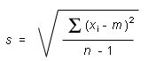
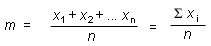
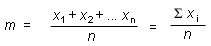
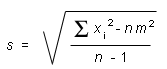

Meas. # Value (m) 1 1.18 2 1.16 3 1.18 4 1.19 5 1.21
If you use Expression (2) from Page 8,
 
you have to calculate the sample mean m, find the deviation of each measurement from this mean, square each deviation, sum the squared deviations, divide the sum by the number of measurements minus 1, and take the square-root of that.
The sample mean works out to be
 

 = (1.18 + 1.16 + 1.18 +
1.19 + 1.21) / 5 = 1.184 m.
= (1.18 + 1.16 + 1.18 +
1.19 + 1.21) / 5 = 1.184 m.
It is meaningful to quote m to one decimal more than the individual measurements, both to avoid round-off error in the following calculation and because the mean is a more precise value than the individual measurements.
The five measurements deviate from the mean by -0.004 m, -0.024 m, -0.004 m, 0.006 m and 0.026 m. (Note that the sum of these deviations is zero. This is one reason why the SD uses the sum of the squares of the deviations to measure the spread of the distribution.)
If you square each of the five deviations and add the squared deviations, you get 0.00132 m2. Divide by the number of measurements minus 1, i.e., by 4, then take the square-root of that and you get 0.0181659 m for s. You can round that to 0.018 m since there is no point in calculating the standard deviation to more than one decimal beyond the decimals of the original data. The number of decimals in 0.018 is the same as in the value of the sample mean quoted above. Thus, we take the best estimate of the SD based on the given sample as
s = 0.018 m .
If you use Expression (3) from Page 8,
 
you first add the squares of the five measurement values, which gives 7.0106 m2; then you subtract n times the square of the sample mean, i.e., 5×1.1842 = 7.00928, which gives 0.00132; you divide this by n - 1, i.e., 4, and take the square root. The result is 0.0182 m after rounding, which is the same as above. If you carry all decimals in both calculations, both calculations will give exactly the same result to all decimals.